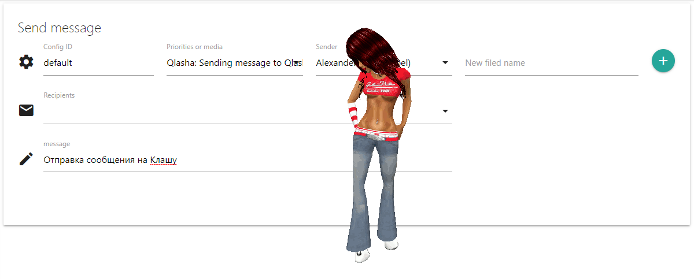

Описание
Средство связи QLASHA предназначено для формирования и отправки сообщений на систему оповещения через громкую связь. В качестве системы оповещения используется программный продукт QLASHA, распространяемый по лицензии открытого и свободного программного обеспечения MIT. Получить исполняемый файл Qlasha.exe можно по ссылке https://github.com/asbelov/Qlasha/blob/master/bin/Release/Qlasha.exe. Поддерживается работа через HTTP прокси сервер.
Описание параметров файла конфигурации config.json
- description: Описание средства связи, например "Sending email via SMTP"
- address: Описание адреса средства связи, например "E-mail address" или ""Phone number"
- re: регулярное выражение с помощью которого можно проверить корректность адреса для средства связи
- <configID>: идентификатор конфигурации средства связи. Для одного средства связи можно сделать несколько конфигураций и в дальнейшем выбирать требуемую конфигурацию при отправке сообщения. Например, в разных конфигурациях одного и того же средства связи могут быть различные провайдеры для отправки СМС.
- transport: объект с параметрами для средства связи. Если значение transport не объект, а строка, то она будет интерпретирована как ссылка на идентификатор конфигурации, из которого необходимо взять параметры средства связи.
- message: объект, который служит в качестве шаблона сообщения для средства связи. Параметр message может отсутствовать.
Описание transport
- host:
- имя хоста на котором работает ПО QLASHA - localAddress:
- если указан, то подключение будет осуществляться с указанного IP адреса - proxyHost:
- имя хоста HTTP прокси. Если не указан, то прокси не используется - proxyPort: <0-65536> - TCP порт HTTP прокси
- proxyUser:
- пользователь для авторизации на HTTP прокси сервере. Поддерживается Basic авторизация. Если не указан, авторизация не осуществляется - proxyPass:
- пароль для авторизации на HTTP прокси сервере
Описание message
- rate:
-10 - 10 - скорость воспроизведения. Если не указано, то 1 - volume:
0 - 100 - уровень громкости. Если не указано, то 100 - severity:
- важность сообщения. Если сформирована очередь сообщений, более важные сообщения будут воспроизводится раньше менее важных. Если не указано, то 0
Пример конфигурации QLASHA
{
"description": "Sending message to Qlasha",
"address": "No address provided",
"re": "^$",
"default": {
"transport": {
"host": "localhost"
},
"message": {
"rate": 1,
"volume": 100,
"severity": 1
}
}
}